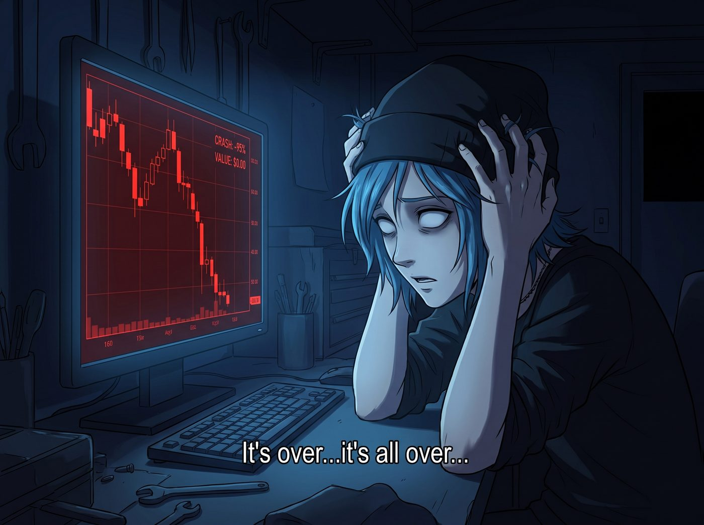

半山腰的救援

九月的一個深夜，二號車廂裡只剩下螢幕幽暗的藍光，以及 Chloe Price 粗重且絕望的呼吸聲。
在工作台的電腦螢幕上，一根刺眼的紅色 K 線正以一種自由落體的方式，無情地砸向深淵。
「完了……全完了……」Chloe 雙手死死抓著藍色的亂髮，眼神空洞地看著螢幕上的數字。她背著 Max 和 Kate，偷偷挪用了工坊準備用來升級太陽能板的 2000 USDT 儲備金，在一個不知名的去中心化交易所裡，全倉殺入了一種名叫量子浣熊幣的加密貨幣。
她原本以為能憑藉自己街頭猛獸的直覺，在暴漲的半山腰短炒一筆，賺點零用錢給皮卡換新輪胎。結果買入不到十分鐘，專案方直接砸盤，幣價瞬間腰斬，並且還在持續陰跌。她現在被死死地套在了半山腰，帳面資金只剩下不到 800 USDT。
一、絕望的求救
「Max……」Chloe 像一隻被打斷腿的哈士奇，轉頭看向正窩在沙發上看書的時空領主，「Maxine，我最好的朋友，我生命中的光……妳能不能……就倒轉個十分鐘？十五分鐘也行！」
Max 連頭都沒抬，翻了一頁書，語氣冷酷無情：「我早就警告過妳，不要去碰那些連白皮書都是用 AI 生成的垃圾空氣幣。我是個擁有創傷後遺症的時空攝影師，不是妳的專屬停損單。撕裂時空連續體去幫妳挽回 1200 塊美金？門都沒有。」
「可是 Kate 明天早上就要核對帳目了！」Chloe 發出了殺豬般的哀嚎，「如果她發現我把買太陽能板的錢拿去買了量子浣熊，她會笑著把我做成沒有加糖的素食燕麥餅乾的！Max，救救我！」
Max 嘆了口氣，合上書：「認賠殺出吧，Price。接受社會的毒打，這是成長的必經之路。」
就在 Chloe 準備痛苦地按下市價認賠按鈕，準備迎接明天小天使的溫柔制裁時，一隻白皙的手輕輕按住了滑鼠。
「Price 學姐，請先不要按。」
實習生 Lily 穿著小熊睡衣，推了推鼻樑上的圓框眼鏡，像個午夜幽靈一樣出現在 Chloe 身後。她的大眼睛盯著螢幕上慘烈的 K 線圖，語氣依然是那種令人安心的、軟糯的甜美。
「Lily！妳懂駭客技術對不對！」Chloe 彷彿抓住了最後一根稻草，一把抓住 Lily 的肩膀瘋狂搖晃，「妳能不能駭進那個什麼區塊鏈？或者駭進交易所的伺服器？幫我把交易紀錄刪掉，把錢退回來！」
Lily 溫柔地將 Chloe 的手拿開，微微歪了歪頭，用一種看著文盲的眼神看著她：「Price 學姐，區塊鏈的底層邏輯是不可篡改的分散式帳本。物理駭入節點是不切實際且嚴重違反聯邦計算機欺詐法的行為。我們是一家充滿愛與和平的畫廊附屬工坊，怎麼能做這種犯罪的事情呢？」
Chloe 絕望地癱倒在椅子上：「那我只能等死了。」
「不過，」Lily 話鋒一轉，拉過一把椅子坐下，手指飛快地在鍵盤上敲擊起來，「雖然代碼是去中心化的，不可篡改。但寫代碼的人，是中心化的，而且充滿了弱點。」
二、行政黑魔法與開源情報的究極融合
接下來的二十分鐘，Chloe 和 Max 見證了一場教科書級別的行政黑魔法與開源情報的究極融合。
Lily 根本沒有去碰那個交易對的智能合約。她直接抓取了量子浣熊幣官網的網域註冊資訊，透過交叉比對一個被隱藏的伺服器 IP，在暗網的一個技術論壇裡找到了專案方負責人的常用 ID。接著，她順藤摸瓜，找到了這個 ID 綁定的職業社交帳號和社群媒體。
「找到了。」Lily 露出了一個 Kate 式的天使微笑，「這個所謂的去中心化匿名極客團隊，其實是史丹佛大學計算機系的一個三年級學生，名叫 Kevin。他不僅用這筆割韭菜的錢買了一輛保時捷，而且，他似乎忘記了為這筆首次代幣發行向美國證券交易委員會提交豁免申請。」
Chloe 愣住了：「所以呢？妳要報警抓他？」
「報警太慢了，學姐，這不符合我們短線解套的效率。」
Lily 點開了電子郵件，開始用最禮貌、最溫柔的語氣起草一封郵件。
主旨：關於量子浣熊幣流動性池異常與SEC證券法合規性的學術探討
尊敬的 Kevin 先生（附上他的真實全名與宿舍房號）：
您好。我是波特蘭 Chase 財團附屬風險評估小組的實習生。
我們近期在對貴專案進行學術研究時，極度震驚地發現，您的代幣發行似乎完美符合了SEC的豪威測試，卻缺乏必要的註冊文件。同時，您將投資人的USDT轉移至私人冷錢包並購買保時捷的行為，可能會讓美國國稅局的查稅員感到非常興奮。
出於對您學術生涯的關心與對年輕創業者的寬容，我們暫時扣留了這份準備發送給SEC、IRS以及史丹佛大學教務處的45頁評估報告。
我們注意到，目前市場上有一筆位於指定錢包地址的訂單，正處於嚴重的虧損狀態。我們相信，作為一個有責任感的專案方，您一定非常願意在接下來的五分鐘內，透過定向回購的方式，為這筆訂單提供一次全額流動性補償。
願上帝保佑您的期末考順利，並祝您的保時捷不會被聯邦法警扣押。期待您的市場表現。
Lily 點擊了發送。順便將這封郵件密件抄送給了一個偽造的SEC舉報信箱，只是為了讓收件人看到這個後綴。
「好了，Price 學姐。」Lily 雙手離開鍵盤，乖巧地把滑鼠推給 Chloe，「現在，請您在您當初買入的那個半山腰價格，掛出全額賣出的限價單。」
「這能行嗎？那混蛋都已經砸盤跑路了，現在根本沒有買盤……」Chloe 半信半疑地掛上了 2000 USDT 的賣單。
三、五分鐘的懸念
螢幕上的時間一分一秒地過去。三分鐘後。
原本死寂、陰跌的 K 線圖上，突然毫無徵兆地拔起了一根巨大無比的綠色實體陽線！那是有人在流動性枯竭的市場裡，用不計成本的市價單瘋狂掃貨，硬生生地把價格拉升了 150%！
「叮！」交易軟體發出一聲清脆的提示音。Chloe 的訂單，在半山腰被精準地全額吃掉。2000 USDT 完好無損地回到了她的帳戶裡。
而在訂單成交的下一秒，那根綠色的 K 線瞬間崩塌，價格再次跌入谷底。彷彿剛才那三秒鐘的暴漲，只是專門為了接 Chloe 下車而存在的專屬電梯。
Chloe 呆呆地看著帳戶裡失而復得的餘額，手機突然震動了一下。是一封來自 Kevin 的匿名回信，只有一個字，隔著螢幕都能感受到對方發抖的手指：
「Done. 已完成。求放過。」
「我的老天啊……」Chloe 倒抽了一口冷氣，看著身邊這個穿著小熊睡衣的十九歲女孩，感覺自己看到了一個能讓華爾街資本家跪下唱征服的金融死神。
「解決了，學姐。」Lily 溫柔地笑了笑，推了推眼鏡。
「Lily！妳是神！妳是我的救世主！」Chloe 激動得想要抱住實習生，「有了妳這招，我們以後去炒幣不是穩賺不賠？！」
四、附帶的懲罰
「Price 學姐，請容我提醒您。」
Lily 的笑容突然收斂了一點，眼神中透出一絲與 Kate 如出一轍的、令人無法反抗的絕對威嚴。
她手指飛快地在電腦上操作了幾下。
「叮！」Chloe 的手機再次響起。她低頭一看，發現自己那個存放 USDT 的冷錢包，權限被修改了。
「為了防止您再次做出這種高風險的投機行為，導致工坊面臨財務危機，」Lily 語氣溫柔，卻帶著不容置疑的果決，「我已經將這個錢包升級成了多重簽名錢包。從現在起，任何超過 50 USDT 的支出，都需要我、Max 學姐和 Kate 學姐三個人中的兩個人授權同意。這叫財務合規升級。」
「什麼？！」Chloe 崩潰了，「妳凍結了我的錢包？！妳這是在剝奪我的財務自由！」
「我這是在保護您的生命安全，學姐。」Lily 露出一個純潔無瑕的笑容，「如果您不同意，我現在就去敲 Kate 學姐的房門，告訴她您剛才拿買太陽能板的錢去買了虛擬浣熊。」
Chloe 瞬間像個洩了氣的皮球，老老實實地閉上了嘴，欲哭無淚地癱在椅子上。
Max 在沙發上發出了一陣無情的嘲笑聲：「幹得漂亮，Lily。妳不僅從半山腰把這頭蠢驢救了下來，還順便給她套上了韁繩。華爾街真的欠妳一個諾貝爾經濟學獎。」
實習生深藏功與名地鞠了個躬，抱著她的小熊抱枕，像個真正的天使一樣輕手輕腳地走回了自己的房間，深藏在二號車廂夜色中的絕對防禦裡。